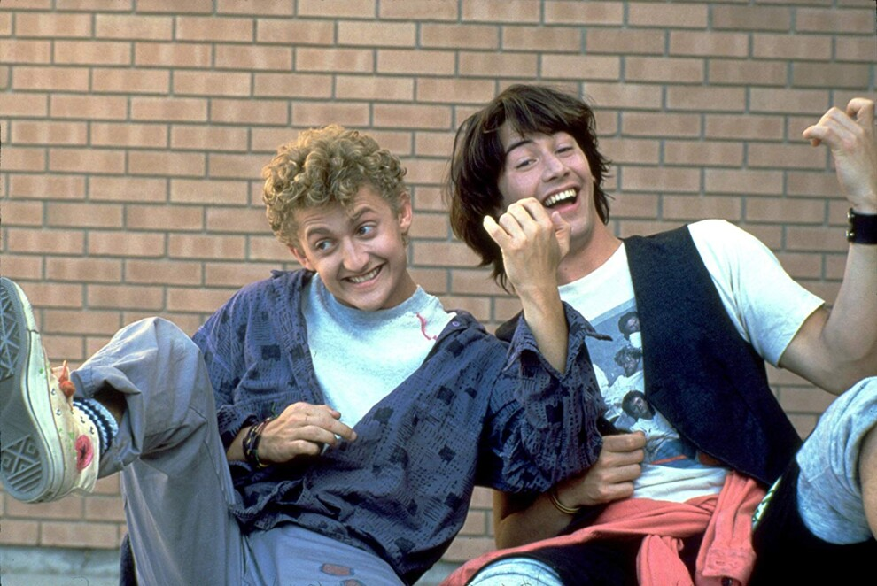
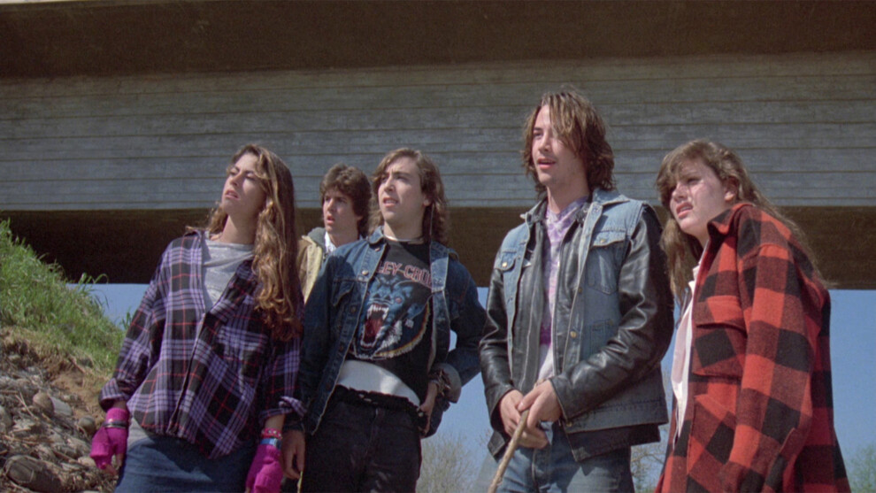
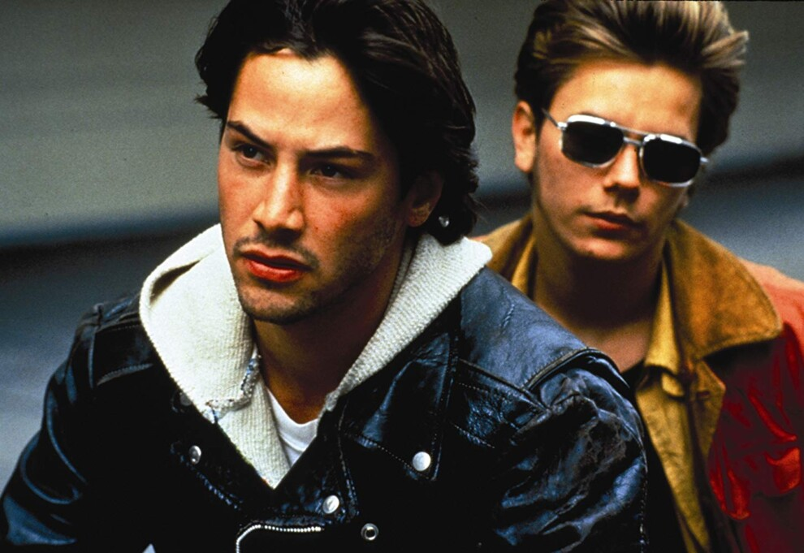
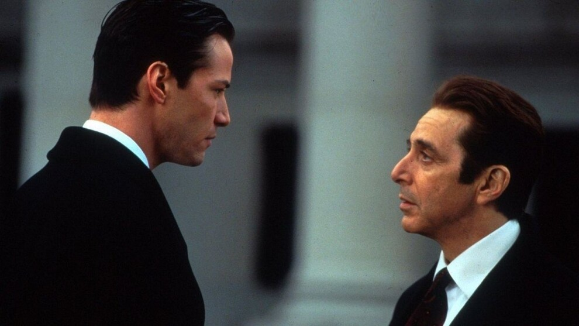
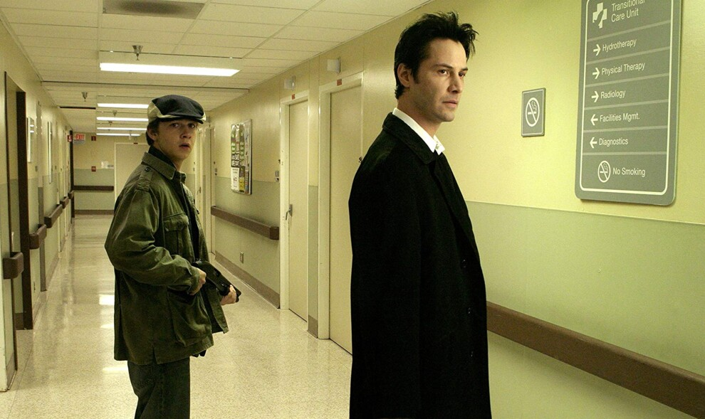

Кіану Рівз – кінозірка з великим стажем, але важливість його досягнень на екрані усвідомили не
так давно. За весь цей час Рівз проявив себе як унікальний
і перспективний актор: він працював у різних
жанрах і знімався
в різнопланових картинах. 2 вересня Кіану виповнюється 58 років, з нагоди чого vogue.ua
згадує найкращі
кінострічки Рівза, але без бойовиків. Адже в його фільмографії є чимало інших робіт, які заслуговують на
похвалу.
- «Неймовірні пригоди Білла і Теда», 1989
- «На березі річки», 1986
- «Мій власний штат Айдахо», 1991
- «Адвокат диявола», 1997
- «Костянтин: Володар темряви», 2005
«Неймовірні пригоди Білла і Теда», 1989

Цей науково-фантастичний комедійний фільм розповідає про нероб Білла (Алекс Вінтер) і Теда (Кіану Рівз).
Парубки подорожують у часі, аби зібрати
історичних постатей для презентації на урок історії. Теодор
Логан
став ідеальною можливістю для втілення безтурботних дурощів, які зображає Рівз.
Але головна тонкість
картини
в тому, що Білл і Тед не такі вже й телепні. Ще у стрічці вражає її сонячний гумор, адже далі у своїй
кар'єрі Кіану
з'являється здебільшого в темних, замислених образах. І саме чарівна пришелепкуватість
його
героя робить цей фільм унікальним в його фільмографії.
«На березі річки», 1986

Американський незалежний кримінальний фільм «На березі річки» безсумнівно можна вважати однією з
найпохмуріших кінострічок про молодь.
І не лише за динамічний і несамовитий сюжет чи безпрецедентний
акторський склад, до якого увійшли Кіану Рівз, Кріспін Гловер, Айоні Скай
і Денніс Гоппер. Цей фільм, у
якому група підлітків зіштовхується з наслідками вбивства їхньої подруги, належить до тих стрічок, про які
не розповідають, а дивляться, щоб переконатися в їхній унікальності.
«Мій власний штат Айдахо», 1991

Один з найкращих фільмів режисера Гаса ван Сента оповідає про двох гастлерів, які подорожують хаотичним
життям. Хоча і Рівер Фенікс
домінує в кожній сцені, Рівз грає не менш захопливо. Складний персонаж Скотт
Фейвор став одним з найкращих у кар'єрі Кіану. Як і у випадку
з стрічкою «На березі річки», Рівз бере
участь
у проєкті, що не схожий ні на що.
«Адвокат диявола», 1997

Немає нічого кращого, ніж фільм, у якому два найвидатніші актори всіх часів знялися разом. В «Адвокаті
диявола» головні ролі виконали
Аль Пачіно і Кіану Рівз. Рівз грає Кевіна Ломакса, успішного адвоката,
якому
запропонувала нову роботу людина на ім'я Джон Мілтон (Аль Пачино).
Та згодом виявляється, що Мілтон не
той,
за кого себе видає. Сюжет, повний посилань на «Втрачений рай», «Пекло Данте» і легенду про Фауста,
точно
оцінять шанувальники гарного кіно.
«Костянтин: Володар темряви», 2005

У цьому окультному детективному фільмі Кіану Рівз грає Джона Костянтина – людину з особливим даром. Він може
бачити напів ангела і
напів демона на Землі (їх багато). Виявляється, що у Бога і Люцифера давня ставка
на
долю людства. Сюжет зосереджений на Костянтині, який
бореться з потойбіччям і Люцифером. Також у фільмі
зіграли Рейчел Вайс, Шая Лабаф і Тільда Свінтон.